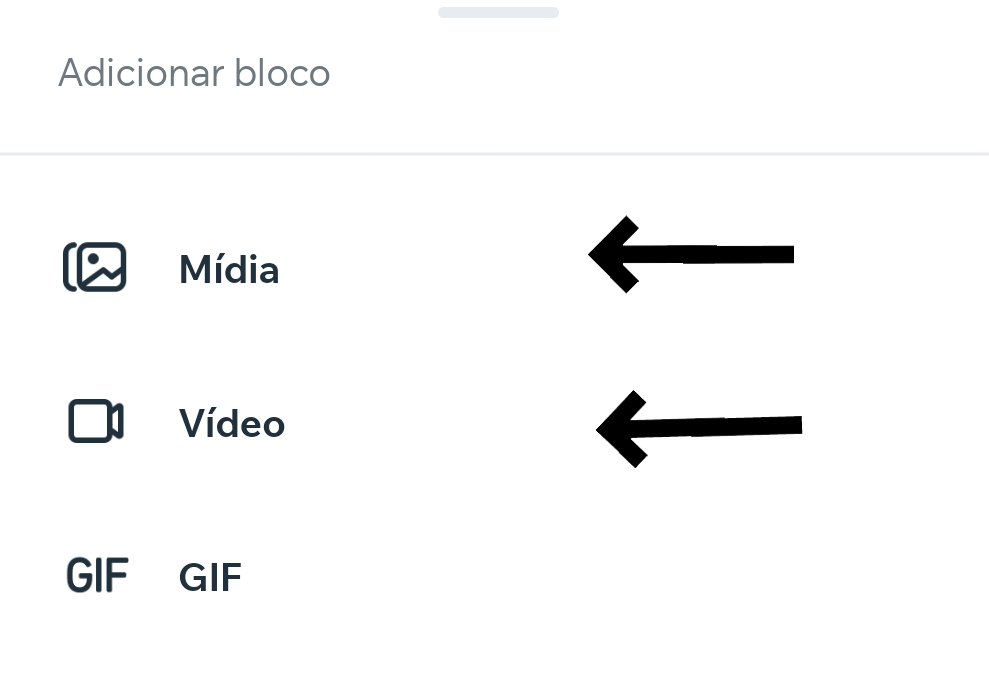
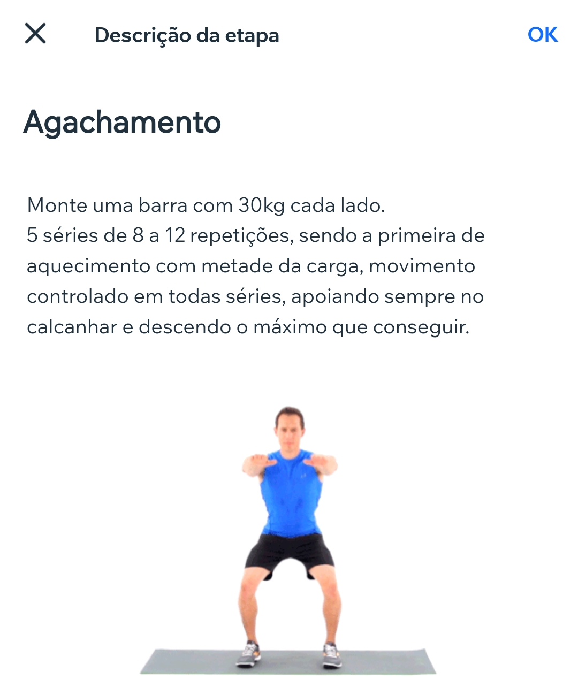

-
1-
Abra o aplicativo e clique no botão Gerenciar , que está localizado no canto direito inferior e clique em Programas Online.
-
2-
Vá em Rascunhos e ache a ficha que está montando.
-
3-
Ao abrir a ficha, você ira ver a seção Introdução, clique nela, vá nos 3 pontinhos e exclua ela.
-
3-a.
As seções, como a Introdução que acabamos de excluír, é basicamente o dia ou treino que o aluno irá fazer, é nela que iremos adicionar os exercícios.
-
4-
Vamos criar uma seção, clique em Adcionar seção e coloque uma mídia de capa(opcional), nome, disponibilidade e uma descrição.
-
5-
Após criar uma seção, clique nela para adicionar os exercícios, clique em Adicionar etapa.
-
5-a.
As etapas são os exercícios daquela seção.
-
6-
Adicione o nome do exercício em Nomeia sua etapa.
-
7-
Adicione as informações daquele exercíco em Como os participantes concluem essa etapa?,como as séries, repetições, descanso entre séries, execução do exercício, carga e pode até colocar uma mídia para mostrar como o exercício funciona na prática.
-
7-a. Adicionando a mídia
Clique no botão no canto inferior esquerdo e selecione Mídia ou Vídeo, nelas você consegue inserir qualquer imagem, vídeo ou gif, consegue ainda editar, criar ou trazer videos da sua galeria ou youtube.


Pronto, você adicionou um exercício para seu aluno.